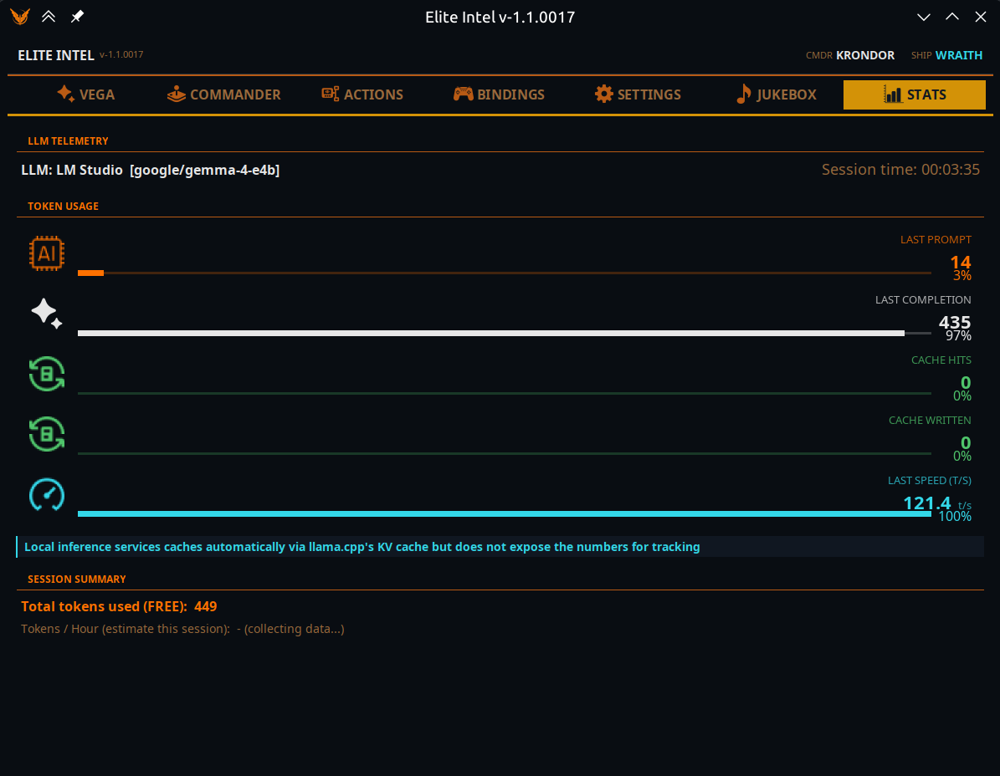

Onglet Statistiques
 Ce que le modèle de
langage vous coûte, en tokens et en latence.
Ce que le modèle de
langage vous coûte, en tokens et en latence.

Un token est l'unité de base du calcul d'un modèle de langage — grosso modo un mot ou un nombre. Si vous êtes chez un fournisseur cloud payant, les tokens sont le compteur.
Télémétrie du LLM
Le modèle qui traite réellement vos requêtes, et depuis combien de temps cette session tourne. Le nom du modèle est celui qui a répondu, pas celui que vous avez configuré : c'est donc ici que vous confirmez que votre changement de fournisseur a bien pris effet.
Consommation de tokens
Cinq barres. Elles décrivent la requête la plus récente, pas la session, pour que vous voyiez la forme d'un échange isolé.
| Cellule | Signification |
|---|---|
| Dernier prompt | Tokens d'entrée envoyés |
| Dernière réponse | Tokens de sortie générés |
| Hits cache | Entrée servie depuis le cache au lieu d'être refacturée |
| Écrit en cache | Entrée écrite dans le cache pour que les requêtes suivantes y trouvent un hit |
| Dernière vitesse | Tokens par seconde |
Les quatre barres de tokens se remplissent en proportion du total de cette seule requête, elles se lisent donc comme une composition. La vitesse n'a pas de plafond fixe : sa barre se remplit donc relativement à la réponse la plus rapide observée dans la session.
Résumé de session
| Ligne | Signification |
|---|---|
| Tokens utilisés | Étiqueté (GRATUIT) sur un modèle local, (facturable) sur un modèle cloud |
| Tokens économisés par le cache | Cloud uniquement. Affiche « facturé à tarif réduit » dès qu'il y a des hits |
| Tokens / heure | Une projection. Affiche « collecte de données… » pendant les 10 premières minutes, car un taux extrapolé à partir de deux minutes de jeu est une fiction |
Ce que les chiffres signifient en pratique
Une session typique tourne autour de 250 000 tokens par heure au total.
L'intégration cloud d'Elite Intel est réglée fournisseur par fournisseur pour maximiser la mise en cache des prompts, et les tokens en cache sont soit gratuits, soit facturés à tarif réduit. La part de ces 250 000 qui finit en cache dépend entièrement du fournisseur : certains en cachent jusqu'à 80 %, d'autres plutôt 40 %. C'est cette différence qui sépare surtout un fournisseur bon marché d'un fournisseur coûteux, et cela vaut la peine de l'observer ici pendant une session avant de vous engager.
Sur un modèle local, il n'y a pas de chiffres de cache. L'inférence locale met bien en cache — llama.cpp tient un cache KV et s'en sert — mais elle ne remonte pas les nombres, il n'y a donc rien d'honnête à afficher. Le panneau le dit plutôt que d'afficher un zéro trompeur, et masque entièrement la ligne de cache.
Pour une version en direct et synthétique des mêmes données, l'onglet Vega porte en bas une bande Résumé système de six blocs.
Community 👉Matrix👈